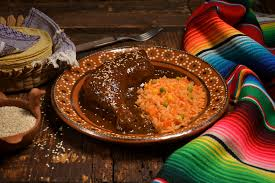

Chicken Mole

Here's a chicken mole recipe that is rich, flavorful, and perfect for a comforting meal.
Ingredients
For the Mole
- 3 dried ancho chilies
- 2 dried pasilla chilies
- 1 dried mulato chili
- 1 dried chipotle chili
- 1 medium onion, chopped
- 3 cloves garlic, minced
- 1 roasted tomato
- 1/4 cup sesame seeds
- 1/4 peanuts
- 2 tablespoons unsweetened cocoa powder
- 1 dark chocolate (70% cocoa, chopped)
- 1/4 teaspoon cinamon
- 1/4 teaspoon cumin
- 1/4 teaspoon cloves
- 1/4 teaspoon sugar
- Salt to taste
- 2 cups of chicken broth
For the chicken
- 4 bone-in, skin-on chicken tights
- 1 tablespoon olive oil or vegetable oil
- Salt and pepper to taste
- 2 cups of chicken broth
Steps
To prepare the mole sauce
- Heat Heat a skillet over medium heat.
Add the dried ancho, pasilla, mulato, and chipotle
chilies (if using). Toast them lightly for about 30
seconds per side, just until fragrant. Be careful not
to burn them.
- Once toasted, remove the stems and seeds, then place the chilies
ina bowl of hot water. Let them soak for 10-15 minutes soft.
- While the chilies are soaking, toast the sesamed sees, peanuts
in the same skillet over medium heat for about 2-3 minutes until
fragrant, being careful not to burn them.
- In a blender, combine the soaked chilies, toasted nuts and seeds,
roasted tomato, galic, onion, cocoa powder, dark chocolate, cinnamon,
cumin and cloves.
- Add about 1 cup of chiken broth and blend until smooth. If it's too thick.
add more broth to reach a sauce-like consistency
Cook the Chicken
- Heat the olive oil in a large over medium-high heat.
- Season the chicken thights with salt and pepper. Once the oil is hot, add
the chicken skin-side down and sear for about 5-7 minutes, or until the
skin is golden brown and crispy.
- Flip the chicken and cook for another 3-4 minutes on the other side.
Remove the chicken from the pot and set it a side
Serve
- Once the chicken is well cooked, remove it from the pot and set aside.
Stir the mole sauce and taste, adjust salt, sugar, or heat to your
preference.
- Serve the chjicken with a generous amount of the mole suace and poure it
over it.
Home